Clinical Decision Support
An AI-driven application for cancer treatment
PROJECT INFO
Mar. 2017 - Nov. 2017
Siemens Healthcare
Princeton, NJ
TEAMMATES
1 UX Researcher
1 UX Design Intern
MY ROLE
Lead designer for 2 CDS applications and closely collaborate with the PM team in Germany and dev team in Princeton.
AI-DRIVEN CLINICAL DECISION SUPPORT
for Cancer Treatment
Clinical decision support (CDS) software provides clinicians, staff, and patients with the knowledge and patient-specific information empowered by Artificial Intelligence. The information is presented at appropriate times to support subsequent diagnostic and treatment clinical decisions for patients.
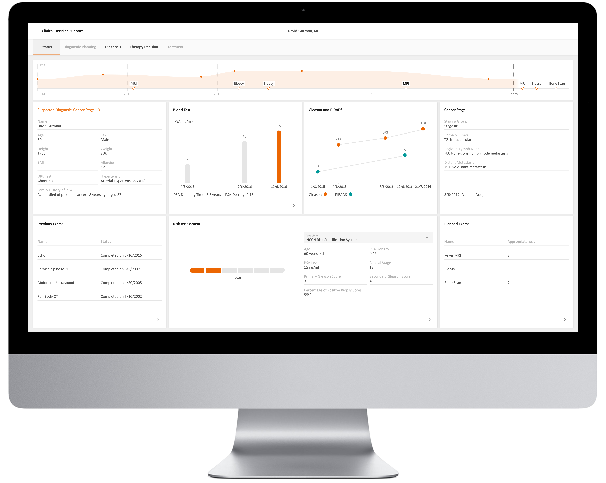
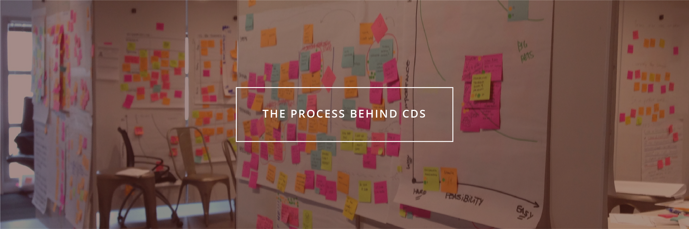
DESIGN PROCESS
The design process is iterative and best thought of as a cycle of exploring opportunity areas, creating potential solutions, and testing those creations to quickly gather feedback to move ideas and prototypes to solutions and plans that can be implemented. Cross-functional collaboration is at the heart of the design process.
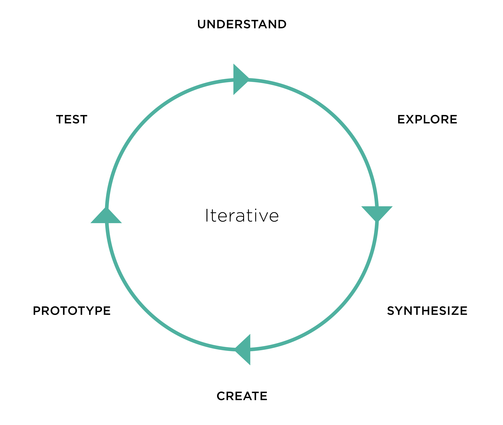
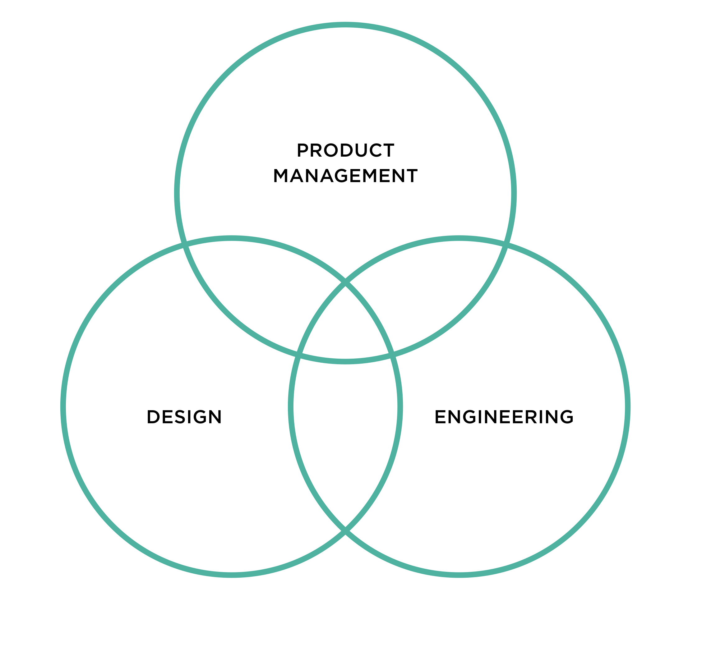
USER RESEARCH
We focus on clinical decision support for prostate cancer treatment in this project. The collaboration sites with Johns Hopkins hospital and Radboud University Nijmegen were set up. Bi-weekly user interviews were conducted with the users: Radiologist, Urologist, NM Physician, etc. to understand their current workflow, pain points, and getting feedback on the concepts we developed.
UNDERSTAND
Why are we focusing on prostate cancer treatment? The new cases of prostate cancer are increasing every year. It was estimated that 26,730 deaths from this disease would occur in 2017. The annual prostate cancer cost is very high.
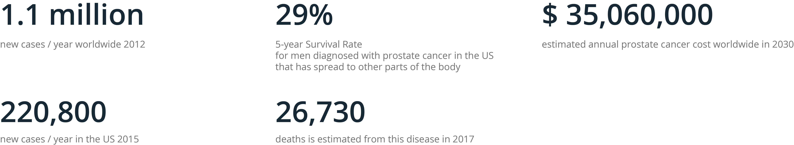
WORKFLOW ANALYSIS
Challenges
- Rapidly increasing volume of medical data
- The high rate of change in therapeutic knowledge
- The complexity of cancer treatment
- Limited time for decision making
Goals
- Improve quality and efficiency of diagnosis
- Assist medical specialties rather than replacing them
- Reduce knowledge gap between clinical research and practice
WHAT IS THE PROBLEM?
“There is a massive under grading with systematic Biopsies, therefore a lot of surgeries are done because of this. We achieve 95% correlation between targeted Biopsies and surgery results.”
- Geert Litjens, Radboud University, Diagnostic Image Analysis Group
Many false positives in current screening
(Need a more precise diagnosis)
The gap between research and practice
(Assist medical specialties with data and knowledge)
Communication between different users
(Need to determine if patients should receive treatment or conduct active surveillance)
COMPETITOR ANALYSIS
We researched the current market competitors on how they handle the clinical decision-making support software and also research on the AI supported decision-making process. The leanings are summarized below.
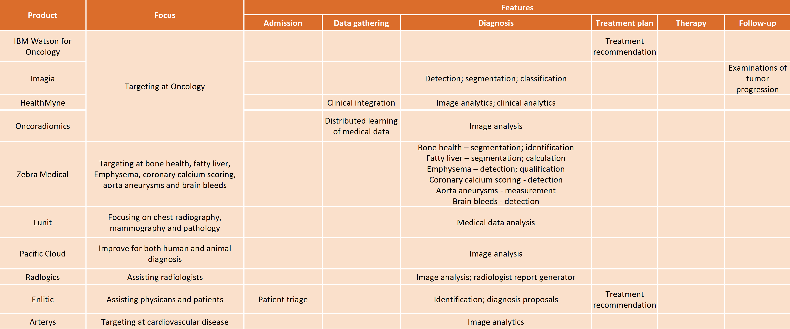
CONTENT
Focus on workflow
Show appropriate information at the appropriate time
Context first
Longitudinal data presentation for easy understanding of overall disease history and status
Access to guidelines
Present specific evidence-based guidelines or rules that should be built into a decision support system
UI
Visualization is key
Show appropriate information as visualization
Present knowledge, not data
Patient-specific data for easy understanding of overall disease history and status
Support easy navigation
Organize content to allow users to easily follow current workflows
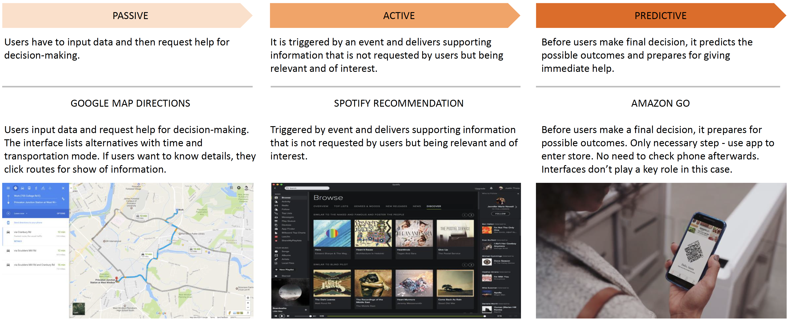
IDEATION
We took the approach of diverging the concepts, analyzing the pros and cons of each concept, then converging to one concept. By this method, we ideated each perspective of the application and had the opportunity to present alternatives to the user.
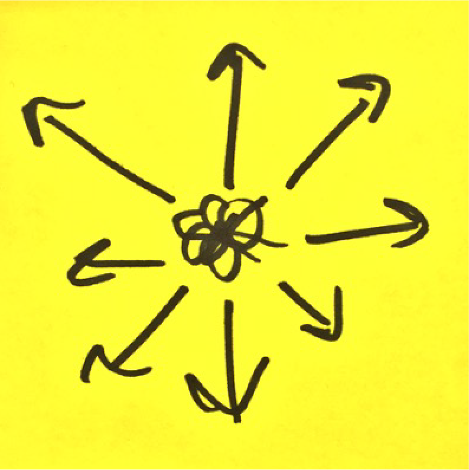
Diverge
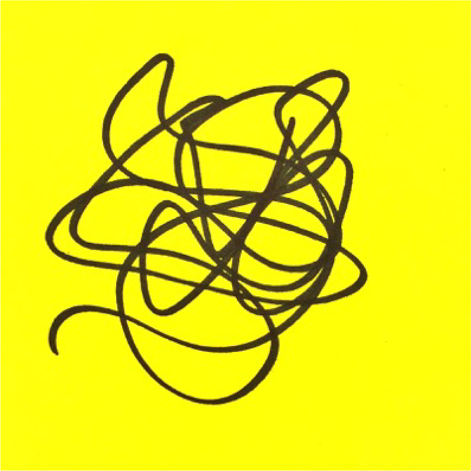
Remix
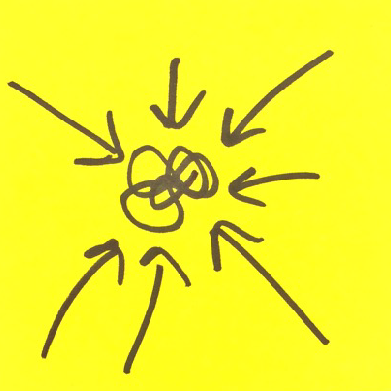
Converge
SKETCH
We ideated the initial concept by sketching out the workflow and the important information along the process. This is a very fast way to document and visualize our thoughts after getting feedback from the user.

CONCEPTS
We designed 3 different concepts to show different information architecture. The different concept has its focus on use cases. By analyzing and testing the different concepts, we converged on one concept.


WIREFRAMES
We went through many iterations when designing the software. The current wireframes include Dashboard, Diagnosis, Therapy pages. From the main pages, the user will be able to drill down to the detail pages in the next level.

HIGH FIDELITY PROTOTYPE
By working with the Engineers and Front-end Developers in the Princeton office, we developed the working prototype which runs the real patient data for demonstration and testing purposes. We also developed Axure prototype to showcase the interaction and workflows of the software.


TESTING
We have been testing and getting feedback from the user every week by showing the prototypes. The feedbacks show the benefit of the data integration and easy-to-use interface for the clinical decision support process.
“I do not want the software to tell me, but to present to me. Presenting scientific options is better than just seeing the guidelines since these are not specific to the patient.”
- Dr. Macura, Radiologist, Johns Hopkins University
“Data integration would help. We will see a whole more complexity in treating prostate cancer. We are going more towards precision medicine and personal care.”
- Prof. Burnett, Urologist, Johns Hopkins University
USE CASE
The use case below shows how an end-user would accomplish a specific task using the interface. Different types of users are involved in the use case: Urologist, Radiologist, Nuclear Medicine Physician, Patient, and other specialists. The story shows how the CDS software will help the users to make a decision for Prostate Cancer diagnosis and treatment.

UROLOGIST
View the Dashboard
A 60-year-old patient with the process of active surveillance: Gleason score of the last Biopsy = 7; PSA= 15 ng/ml. The Patient gets a referral to the Hospital for staging. The patient checks in, the Urologist opens the CDS and finds a prepared summary of the Patient history, including comorbidities, Medication, Family history, Lab values, Pathology results.

Plan the Exams
The urologist discusses the next steps with the Patient. The patient will get an MRI of the Pelvis and a Bone scan to perform a screening of possible Bone metastasis.

RADIOLOGIST
Perform the Exam
The radiologist opens up the CDS and works with the relevant data (Lab values, Biopsy results, Patient history, Comorbidities, genetic disposition, etc.) to perform a precise diagnosis of the Pelvis MRI. The report of the MRI exam is sent to CDS.
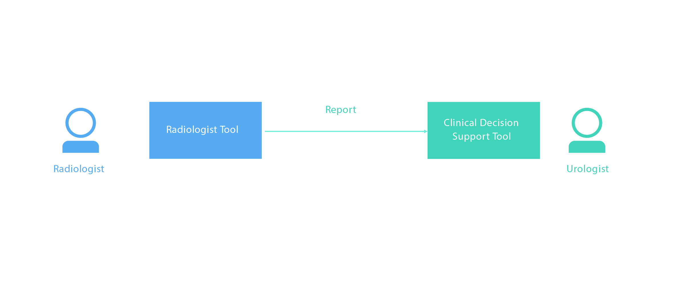
Validate Findings
The radiologist goes to the Diagnosis page. The recent exam report is open and the findings are extracted from the report and organized in the CDS tool. The radiologist can review and validate the findings.

Findings are Visualized
By clicking validate button, the report is closed. The exam findings including previous imaging exams and biopsy exams are overlaid and visualized in the cartoon automatically.

NUCLEAR MEDICINE PHYSICIAN
Perform the Exam
The NM physician opens the CDS to work with the relevant data (Anamnesis if bone pain is described by the Patient, Patient history, genetic disposition, Biopsy results, etc.) The NM physician diagnoses that no bone metastasis is detected. The Bone Scan report is sent to the CDS tool. Similar to the Radiologist, the NM physician validates the finding and the finding is visualized on the global staging.
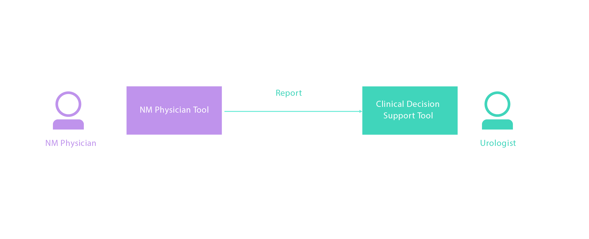

UROLOGIST
Review the Dashboard
The Patient goes to the Urologist to review the results of the examinations. At this stage, the cancer stage and risk are calculated by the system.
Review the Diagnosis
The urologist goes to the staging page and checks the result of the Pelvis MRI and Bone Scan. The tumor is intracapsular, with no enlarged Lymph nodes in the pelvic area; the result is a PI-RADS score of 5. The Urologist edits the diagnosis when needed.
Recommend the Therapy
By clicking the therapy page, the Urologist gets therapy recommendations. The patient value and side effects of each therapy are visualized to help the patient and Urologist make the decision. The urologist recommends a radical prostatectomy to approach cancer curative. The urologist can communicate with a senior Urologist about the therapy recommendation.

Detail Pages
The user can drill down to the detail pages from the dashboard to review more information such as a previous exam, risk assessment, previous exam data, family history, guidelines, etc.